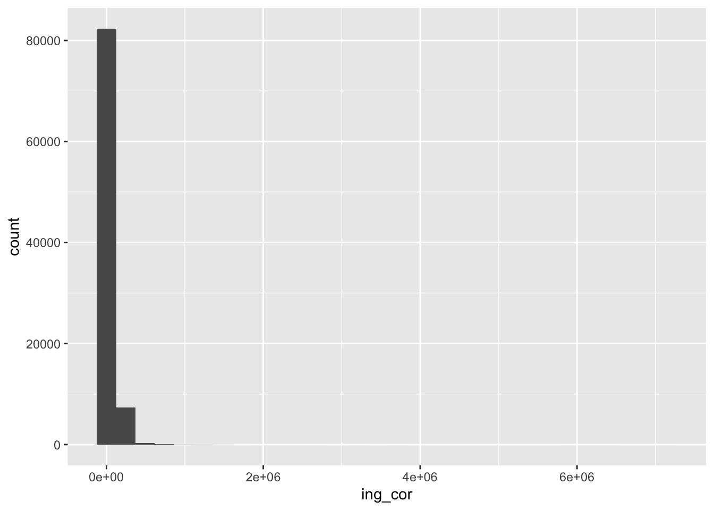
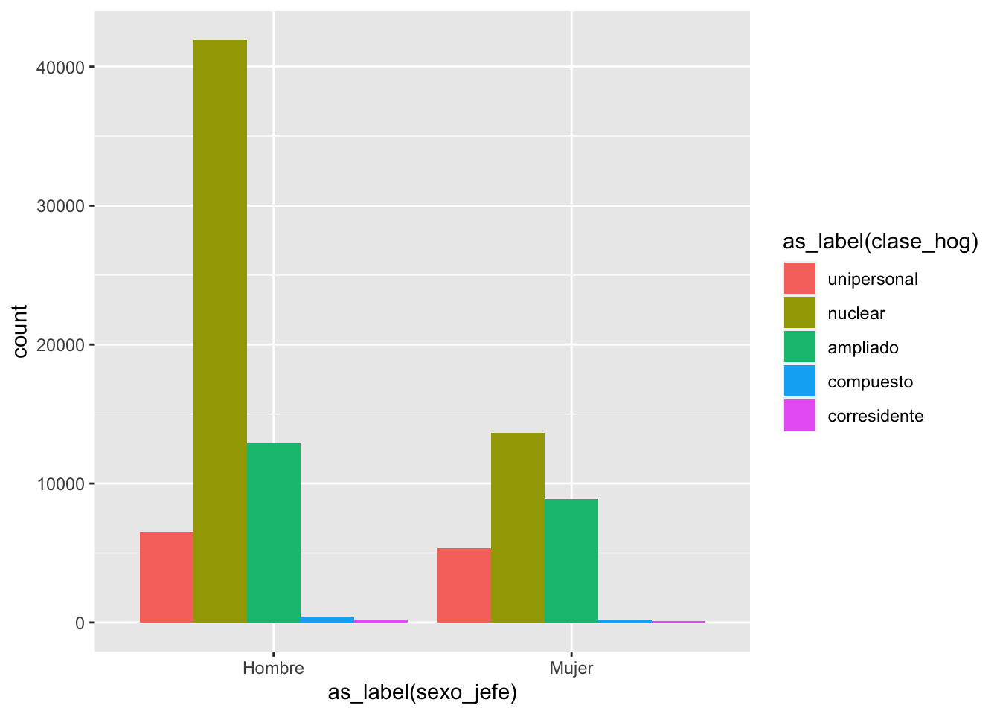

E importamos la base e incluimos los cambios anteriores
etiqueta_sex<-c("Hombre", "Mujer")concentrado2022 <- haven::read_dta("datos/concentrado2022.dta") %>%mutate(sexo_jefe=as.numeric(sexo_jefe)) %>%# para quitar el "string" sjlabelled::set_labels(sexo_jefe, labels=etiqueta_sex) %>%mutate(clase_hog=as.numeric(clase_hog)) %>%# para quitar el "string" sjlabelled::set_labels(clase_hog, labels=c("unipersonal","nuclear", "ampliado","compuesto","corresidente")) %>%mutate(educa_jefe=as.numeric(educa_jefe)) %>%set_labels(educa_jefe,labels=c("Sin instrucción", "Preescolar","Primaria incompleta","Primaria completa","Secundaria incompleta","Secundaria completa","Preparatoria incompleta","Preparatoria completa","Profesional incompleta","Profesional completa","Posgrado")) %>%mutate(ent=stringr::str_sub(folioviv, start=1, end=2 ))
¿Cuál es el mejor gráfico?
Hay cursos específicos de visualización de datos. Es maravilloso pero también requiere que estudiemos bien qué tipo de datos tenemos y cuáles son nuestros objetivos.
Para hacer un gráfico, {ggplot2} tiene el comando ggplot(). Hacer gráficos con esta función tiene una lógica aditiva. Lo ideal es que iniciemos estableciendo el mapeo estético de nuestro gráfico, con el comando aes()
concentrado2022 %>% ggplot2::ggplot() +# ojo es un +aes(x=as_label(sexo_jefe))
g1<-concentrado2022 %>% ggplot2::ggplot() +# ojo es un +aes(x=as_label(sexo_jefe))g1 ## imprime el lienzo
Gráficos univariados
Para cualitativas
Sabemos que la mejor son las barras
g1 +geom_bar()
g1 +geom_bar(aes(fill =as_label(sexo_jefe) )) ## colorea la geometría
## Esto es equivalenteconcentrado2022 %>%ggplot(aes(as_label(sexo_jefe),fill =as_label(sexo_jefe) ) ) +geom_bar()
Para variables cuantitativas
Podemos hacer histogramas y gráficos de densidad, de manera fácil. La idea es agregar en nuestro “lienzo” una geometría, un valor para dibujar en él. Esto se agrega con un “+” y con la figura que se añadirá a nuestro gráfico.
g2<-concentrado2022 %>%ggplot(aes(ing_cor))g2 ## imprime el lienzo
Histograma
g2 +geom_histogram()
`stat_bin()` using `bins = 30`. Pick better value with `binwidth`.

Densidad
g2 +geom_density()
Gráficos bivariados
Cuali-cuali
g1 +geom_bar(aes(fill =as_label(clase_hog)),position="dodge") #pone las categorías lado a lado y no apiladas

Otra manera interesante de observar estas variables, es que estando apiladas, cada categoría de escolaridad se entendiera como una unidad:
g_bivariado <- g1 +geom_bar(aes(fill =as_label(clase_hog)),position="fill") ## cada categoría "llena" a una unidadg_bivariado
Si la lógica de las capas y lienzos parece un poco complicada para graficar con {ggplot2}, el paquete “esquisse” tiene un complemento. Cuando lo instalamos con pacman más arriba, se puede observar el complemento:
Hoy desde el complemento podemos acceder a el siguiente menú y seleccionar nuestra base.
En tu barra de íconos de Rstudio
Una vez seleccionada, puedes hacer “drag and drop” de las variables y elegir el tipo de gráfico, incluso puedes hacer filtro con las variables disponibles
Puedes exportar esto a una imagen, a powerpoint o como código a ejecutar en RStudio. Esta herramienta es muy útil para irnos acostumbrando al código de ggplot que puede ser bastante complicado en los primeros acercamientos
Gráficos bivariados
Para los gráficos “cuanti-cuanti”, iniciamos con un gráfico de dispersión o scatter
Realiza dos gráficos. 1. Uno de una sola variable 2. otro con dos variables, el que sea de tu agrado, con las variables que te sientes cómoda o cómodo, en la base de datos de tu elección
Puedes modificarlo usando el paquete {esquisse}. Envía las imágenes